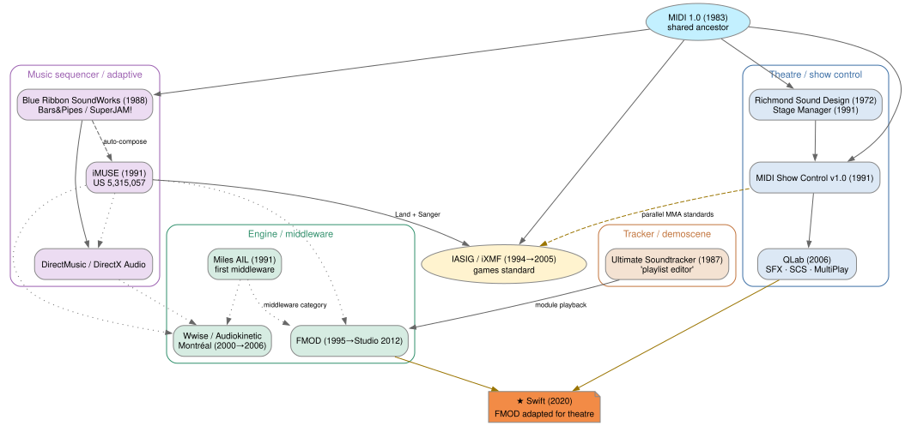

Genealogy, and the trap it sets
Where the timeline comes from
FMOD & Wwise and theatre cue software are siblings, not parent-and-child — both descend from MIDI (1983). The busiest documented traffic runs games → theatre, not the reverse.
- FMOD = a demoscene tracker player (1995); FMOD Studio (2012) is “designed like a DAW.”
- Wwise = Montréal music production, never theatre.

The timeline is inherited twice — from the tracker playlist and the DAW. Linearity has deep roots; explorable space has none. So exploratory audiogames stay rare — and blind-accessibility often collapses into a guided rail.
Background study, “Audio performance control, from the theatre cue to the game engine.” Method: a critical walkthrough (Light, Burgess & Duguay, 2018) of FMOD and Wwise.